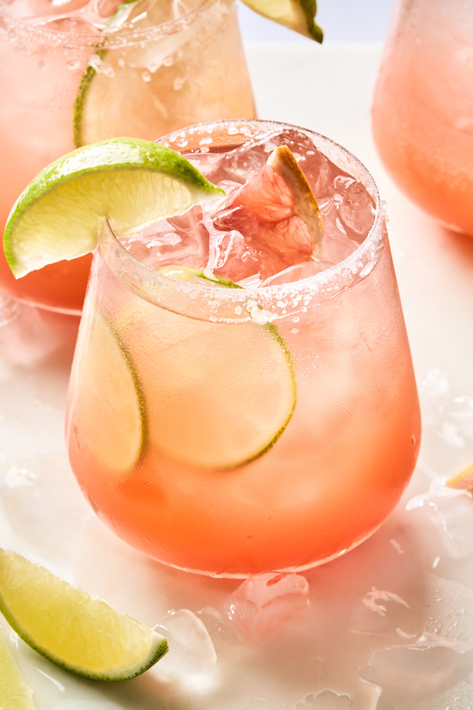

Paloma

Description
My friends and I used to enjoy a similar drink at a local Mexican restaurant, but they suddenly stopped making it one day. I decided to try recreating it at home with delicious results! Perfect for a Mexican brunch!
Ingredients
- 1 pinch chili-lime seasoning
- ice
- 2 ounces habanero-infused tequila
- 1 lime wedge
- 5 ounces grapefruit-flavored soda
Steps
- Rim a highball glass with chili-lime seasoning and fill halfway with ice.
- Combine tequila, lime juice, and 1 cup ice in a cocktail shaker. Shake for 1 minute. Strain into the glass. Top with grapefruit soda.
Back to the recipes